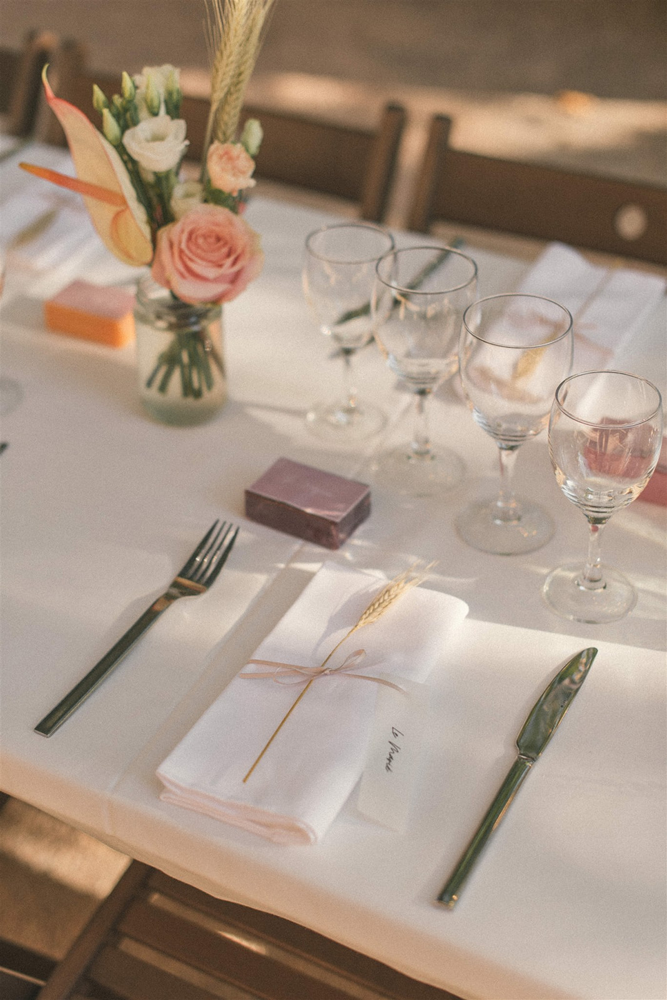
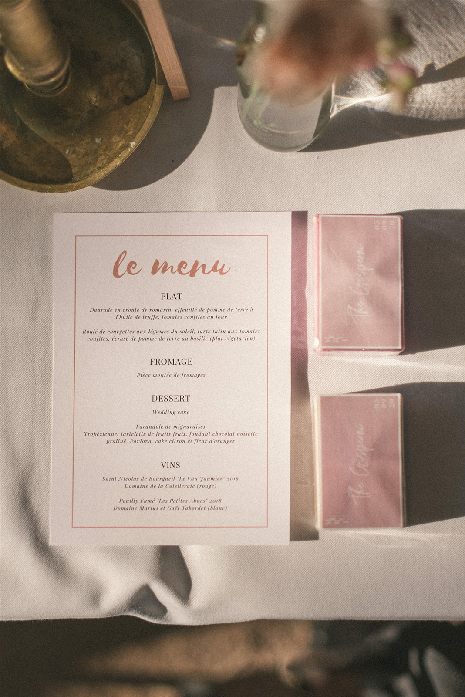

Un mariage plus vert et responsable pour un impact positif sur l’environnement
Organiser un mariage est un moment de joie et de célébration, mais cela peut également avoir un impact sur l’environnement, notamment en termes d’empreinte carbone. Entre les déplacements, la consommation d’énergie, la nourriture, la décoration et les matériaux utilisés, un mariage peut produire une quantité significative de CO2. Cependant, il existe de nombreuses solutions pour réduire l’empreinte carbone de cet événement spécial. Dans cet article, je vous explique pourquoi il est important de réduire cette empreinte et comment y parvenir tout en organisant un mariage magnifique et mémorable.
Pourquoi réduire l’empreinte carbone de votre mariage ?
L’empreinte carbone représente la quantité de dioxyde de carbone (CO2) émise lors de la production de biens et services, y compris pour des événements comme un mariage. Aujourd’hui, les préoccupations environnementales sont plus fortes que jamais, et réduire cette empreinte est essentiel pour minimiser l’impact sur le réchauffement climatique.
Organiser un mariage éco-responsable en réduisant son empreinte carbone permet non seulement de diminuer votre impact environnemental mais aussi de sensibiliser vos invités à l’importance de la durabilité. De plus, un mariage plus vert a aussi des avantages financiers : vous pouvez réaliser des économies tout en respectant la planète.
Comment réduire l’empreinte carbone de votre mariage ?
1. Choisir un lieu de mariage éco-responsable
Le choix du lieu de réception est l’une des décisions les plus importantes pour réduire l’empreinte carbone de votre mariage. Un lieu qui utilise des énergies renouvelables, qui gère efficacement les déchets et qui applique des pratiques durables aura un impact environnemental bien moindre qu’un autre. Si possible, privilégiez un lieu de réception local pour éviter les trajets longs en voiture ou en avion pour vos invités.
En optant pour un lieu en plein air ou un espace déjà intégré dans un environnement naturel, vous réduisez également le besoin de décoration artificielle, ce qui limite la consommation de ressources et les déchets inutiles.
2. Limiter les déplacements : un mariage local ou avec des options de transport groupé
Les déplacements des invités représentent une part importante de l’empreinte carbone d’un mariage. Pour limiter cet impact, choisissez un lieu de mariage situé à proximité de la majorité de vos invités ou proposez-leur des solutions de transport collectives. Louer un bus, organiser des navettes ou encourager le covoiturage sont des solutions simples pour réduire les émissions liées aux trajets.
Si certains invités viennent de l’étranger, il est préférable d’opter pour un événement en petit comité ou de trouver des alternatives locales aux grandes destinations qui nécessitent de longs voyages en avion.
3. Sélectionner des options de nourriture éco-responsables
L’alimentation est l’un des aspects les plus importants dans la réduction de l’empreinte carbone de votre mariage. La production de viande, notamment la viande rouge, est particulièrement polluante. En choisissant un menu végétarien ou végétalien, vous pouvez réduire considérablement l’empreinte carbone de votre repas.
De plus, privilégier les produits locaux et de saison permet de diminuer les émissions liées au transport des aliments. Un traiteur local engagé dans une démarche durable pourra vous proposer des menus à faible impact environnemental, avec des ingrédients frais, bio et produits localement. Assurez-vous également de planifier la quantité de nourriture pour éviter le gaspillage alimentaire.


4. Réduire les déchets : des options réutilisables et recyclables
Les déchets générés par un mariage peuvent avoir un impact important sur l’environnement. Pour limiter ce gaspillage, privilégiez des objets réutilisables plutôt que des articles jetables. Utilisez de la vaisselle et des couverts en inox, en verre ou en céramique plutôt que des produits en plastique. Pour les décorations, choisissez des éléments naturels ou réutilisables, comme des fleurs en pot, des guirlandes en tissu ou des objets vintage.
Si vous devez utiliser des objets jetables, assurez-vous qu’ils soient recyclables ou compostables, comme des serviettes en papier recyclé, des assiettes en bambou ou des pailles en inox.
5. Opter pour des décorations durables et minimalistes
L’une des façons les plus efficaces de réduire l’empreinte carbone d’un mariage est de minimiser les décorations. Un mariage minimaliste, qui privilégie la simplicité et l’authenticité, a l’avantage de réduire la consommation de ressources et de matériaux. Les décorations naturelles, comme des bougies en cire d’abeille, des éléments en bois recyclé ou des compositions florales locales, sont à la fois écologiques et esthétiques.
Évitez les décorations en plastique et privilégiez les objets que vous pourrez réutiliser après l’événement, comme des bocaux en verre, des lanternes ou des fleurs séchées.



6. Utiliser des matériaux durables pour les tenues et accessoires
Les vêtements de mariage, qu’il s’agisse de la robe de mariée ou du costume, peuvent aussi avoir une empreinte carbone. Pour réduire l’impact, vous pouvez opter pour une robe de mariée fabriquée à partir de tissus biologiques ou recyclés, ou encore acheter une robe d’occasion. La location de tenues est une autre option durable qui permet d’éviter la surproduction et le gaspillage.
En ce qui concerne les accessoires, privilégiez des objets faits main, en matériaux naturels, ou même la location de bijoux pour éviter la consommation de nouveaux matériaux et l’exploitation minière.
7. Compensez l’empreinte carbone de votre mariage
Il est pratiquement impossible d’éliminer complètement l’empreinte carbone d’un mariage, mais vous pouvez compenser les émissions restantes. Pour ce faire, vous pouvez investir dans des projets de compensation carbone, comme la plantation d’arbres ou la participation à des projets d’énergie renouvelable. De nombreux sites et entreprises offrent des services permettant de calculer l’empreinte carbone d’un événement et d’investir dans des projets de réduction des émissions.
8. Optez pour un mariage numérique ou hybride
Dans l’ère du numérique, un mariage hybride ou virtuel peut être une excellente manière de réduire l’empreinte carbone. Si vous avez des invités qui ne peuvent pas se déplacer, pensez à organiser une cérémonie en ligne ou un streaming de l’événement. Cela permettra à vos proches de participer tout en évitant les déplacements, et donc les émissions de CO2 liées aux trajets.
Conclusion : un mariage plus vert, un avenir plus responsable
Réduire l’empreinte carbone de votre mariage n’est pas seulement un geste pour la planète, mais également une manière de sensibiliser vos invités à l’importance de l’éco-responsabilité. En choisissant un lieu local, en privilégiant des options alimentaires végétariennes ou végétaliennes, en réduisant les déchets et en optant pour des pratiques durables, vous pouvez organiser un mariage qui respecte l’environnement tout en étant inoubliable. De plus, les solutions de compensation permettent de rendre votre mariage encore plus respectueux de l’environnement. Chaque petit geste compte, et ensemble, nous pouvons faire une réelle différence pour l’avenir de notre planète.
Si vous êtes curieux, je vous propose de calculer votre empreinte carbone mais aussi d’eau avec le calculateur de l’ADEME : https://nosgestesclimat.fr